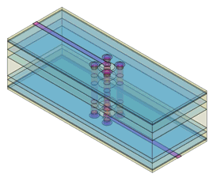
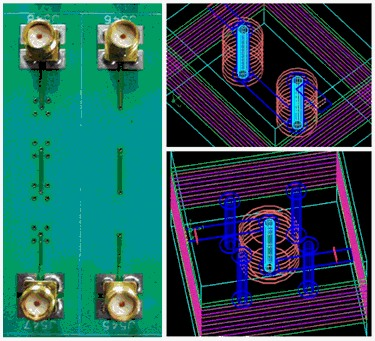
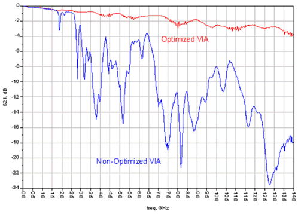

Importance of ground vias
For high-speed design it is important to use ground vias surrounding the signal via to provide a reference plane for the signal trace line through the via.
The simplified graphic below shows an inter-layer via connecting the microstrips on the outer layers. Four ground vias surround the signal via.

The following figure shows a series of four optimized vias surrounded by four ground vias next to a series of four standard non-optimized via without any ground vias.

The graphs in the next figure clearly show the consequences if vias are not optimized. Beyond 1.5 GHz the performance of the non-optimized via drops drastically, while the optimized via shows a relative stable performance.

Functional changes
- Introduced before SmarTest 6.3.2